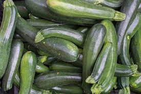
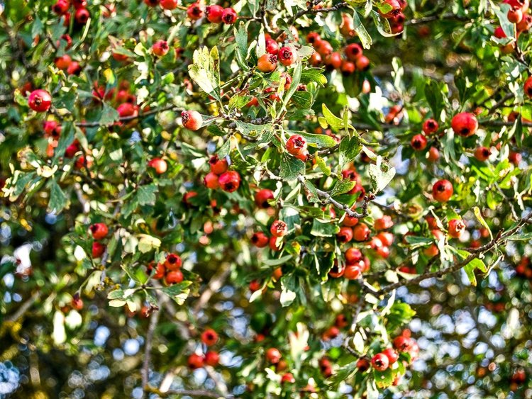
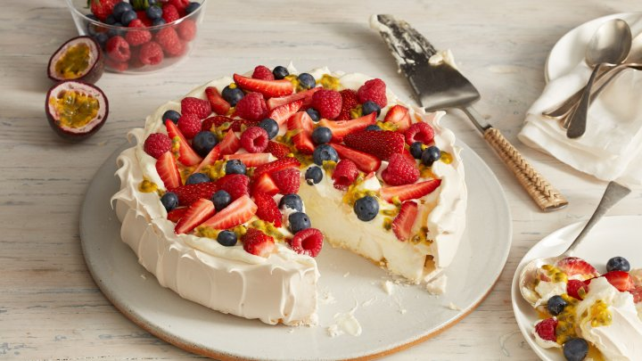
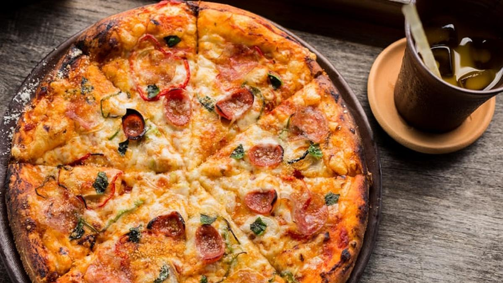
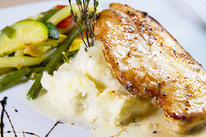

vegetables Section
This vegetable, which is a type of pumpkin and is also popularly known as courgette, is similar to a dark green cucumber. Zucchini is widely used in the European culinary world. Suitable for making various salads, soups, stir-fries, or various other savory dishes. How to prepare it, you don't need to peel the skin and the zucchini can be eaten fresh, or mashed into soup.

Fruits Section
The fruit is mostly orange or yellow, but varies to whitish or red, tasting like an apple. The fruit is like the Irish whitethorn (haws) but larger and bright red, with a pleasant sour-sweet taste when grown in hotter climates. However, the fruit does not fully ripen in colder climates, but can be used for cooking and preserving.

Snack Section
Pavlova is known as a dessert. This snack comes with a crunchy texture on the outside and soft like a marshmallow on the inside. It tastes sweet and the top of the cake is topped with various fruit slices which add to the fresh taste.

junk Food Section
Italian junk food origin consisting of a usually round, flat base of leavened wheat-based dough topped with tomatoes, cheese, and often various other ingredients (such as anchovies, mushrooms, onions, olives, vegetables, meat, etc.), which is then baked at a high temperature, traditionally in a wood-fired oven.

Food Section
Grilled chicken with Indian spices with the creamiest mashed potatoes and seasonal vegetables! Combine with wine for a perfect relaxing
